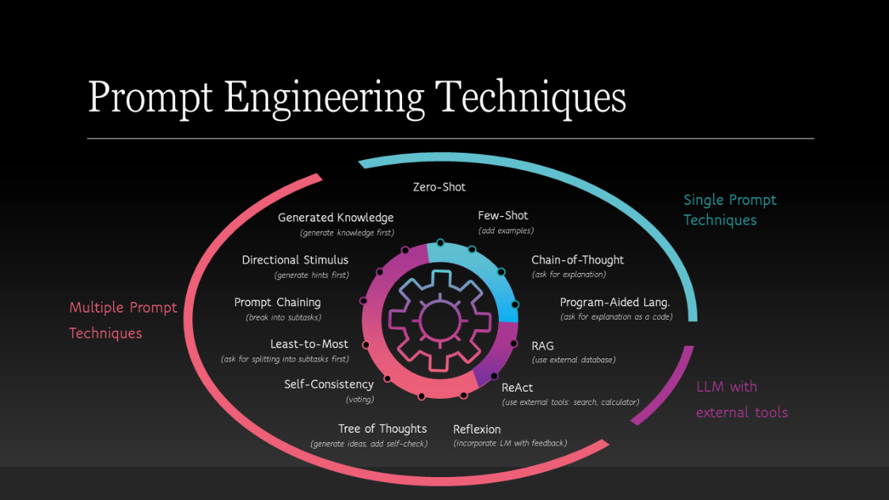

什么是 Prompt Engineering
随着大语言模型能力的不断提升，人们逐渐发现：模型本身的能力只是上限，而如何与模型沟通，则 决定了实际效果。在这种背景下，Prompt Engineering（提示工程）逐渐成为构建 AI 应用的重要技术 之一。它本质上是一种通过设计输入提示词（Prompt），引导大语言模型生成更准确、更稳定输出的 方法体系。

简单来说，Prompt Engineering 就是为大模型编写“高质量问题说明书”。大模型并不像传统程序那 样通过固定逻辑运行，它更像一个具有强大知识和语言能力的“概率生成系统”。如果输入描述模 糊，模型就可能给出不稳定甚至错误的回答；而当输入信息清晰、结构合理时，模型往往能够给出更 加准确和符合预期的结果。因此，在实际应用中，Prompt 的设计往往直接影响系统质量。 在很多 AI 系统中，例如 RAG 系统、AI Agent、智能客服、代码生成系统等，Prompt Engineering 都 是核心能力之一。开发者需要通过合理的 Prompt 设计，使模型能够正确理解任务、遵循约束，并按 照指定格式返回结果，从而让大模型真正能够嵌入到业务系统之中。
从工程角度看，Prompt Engineering 并不是简单地“写一句提示词”，而是一套系统化的方法，包括 Prompt 结构设计、任务分解、示例引导、输出控制以及安全防护等多个方面。优秀的 Prompt 设计 不仅可以显著提升模型效果，还能够降低推理成本，提高系统稳定性。 Prompt 的基本结构
一个完整的 Prompt 通常由多个部分组成，而不仅仅是一句简单的指令。为了让模型更好地理解任 务，Prompt 往往需要包含以下几个核心元素：
首先是 角色定义（Role）。通过给模型设定角色，可以让模型在特定语境下进行回答。例如，让模型 扮演“法律顾问”“客服专家”或者“资深程序员”。角色设定可以帮助模型在知识范围和表达方式 上更加贴近目标任务。
其次是 任务描述（Task Instruction）。这一部分用于明确告诉模型需要完成什么任务，例如总结文 章、生成代码、分析数据或进行对话回复。任务描述需要尽量清晰具体，避免过于模糊的表达。 第三部分是 上下文信息（Context）。在许多复杂任务中，仅靠简单指令是不够的，模型还需要额外 的信息。例如用户历史对话、检索到的知识库内容、业务规则等。这些信息通常会被放入 Prompt 中，作为模型推理的依据。
最后是 输出要求（Output Format）。在工程系统中，模型输出往往需要符合特定格式，例如 JSON、Markdown 或结构化字段。因此，在 Prompt 中明确输出格式，可以显著提高结果的可解析 性。
一个典型的 Prompt 结构通常可以抽象为：
角色 + 任务说明 + 上下文信息 + 输出要求
通过这样的结构化设计，Prompt 不再是一段随意的文字，而是成为一种可以被工程化管理的“模型调 用协议”。
Prompt 在系统中的作用
在 AI 应用系统中，Prompt 并不是一个简单的输入文本，而是连接 用户需求、业务逻辑与大模型能力 之间的关键桥梁。 首先，Prompt 是 任务定义层。用户的自然语言需求往往是不完整甚至模糊的，而系统需要通过 Prompt 将这些需求转化为清晰的模型任务。例如，在智能客服系统中，用户可能只是说“这个订单怎 么退款”，而 Prompt 会将其转换为结构化任务，例如“判断用户意图并生成退款指引”。 其次，Prompt 是 模型行为控制机制。大模型具有较高的自由度，如果没有约束，输出可能不稳定。 通过 Prompt，可以限制模型的回答范围、指定输出结构、控制回答风格，从而让模型更像一个可控的 系统组件。
再次，Prompt 也是 系统推理流程的一部分。在复杂的 AI 系统中，一个任务往往不会只调用一次模 型，而是通过多轮 Prompt 完成。例如在 AI Agent 系统中，模型可能需要先理解问题，然后调用工 具，再根据工具结果继续推理。在这个过程中，每一步都依赖不同的 Prompt 模板。 最后，Prompt 还是 系统安全与稳定的重要保障。合理的 Prompt 设计可以减少模型幻觉，避免不符 合规范的输出，并对潜在的 Prompt Injection 攻击进行一定程度的防护。 因此，在现代 AI 系统架构中，Prompt 已经不再只是“输入文本”，而逐渐演变为一种类似 程序接口 （Model Interface） 的工程组件。优秀的 Prompt Engineering 能够显著提升 AI 系统的可控性、稳 定性和业务价值。